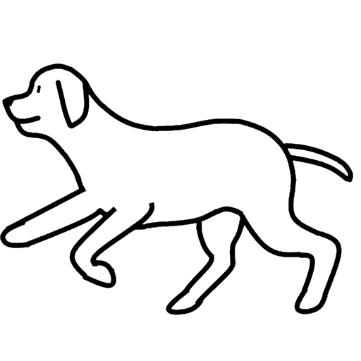

かならずお読みください→
いぬははしるのがすき
理由はよくわからないのですが、こどもは走るのがすきです。いつもせわしなく、あっちへ行ったりこっちへいったり。ゆっくりしているはどうも好きではないようで、二、三人あつまるとすぐかけっこがはじまります。交通量の多い所ではとても気を使います。
当院のこども支援センタでも、突然走り出すこどもの患者さんがいるので気をつけましょうという話があります。こちらは衝突や転倒など危険なこともあるためです。やはりこどもは走り出したい何かがあるかもしれません。
実はいぬも走るのが大好きです。しつけのいいいぬは飼い主さんとならんできちんと歩いていますが、飼い主が走ると嬉しそうに（いぬの笑顔ってあれですね）一緒に走ります。近くの公園の広場でもそんな様子がよく見られます。何しろヒトとイヌは長い付き合いですから、もうずっと一緒に走っているのでしょう。
ということで、今回はしろいいぬをかるくかけっこさせてみました。またもっとはやく走らせてみました。どうぞお試しください。
しろいいぬのおもちゃは、左右のスワイプでいぬを動かすおもちゃです。これまでいくつか紹介してきました。
はじめに作ったのは、右を向いたり、正面を向いたり、左をむいたりするものでした。 これは、「ねがえり」をイメージしたごく基本的な方向を変える運動を表現しています。
つぎに、最初の方向転換に左右の歩行を追加しました。これは、「はいはい」をイメージした、方向転換と移動を表現しています。
そして今回ご紹介するのは、さらに駆け足を追加したもの、そしてさらに疾走を追加した二種類です。これらは、「歩行」や「走行」をイメージしたもので、速さを表現したものです。
これらのおもちゃは、少しづつ動きや方向やその速さがひろがるように作ってきました。だんだんおもちゃに慣れたり飽きたりしたころに、とりかえてもらえるといいのかもしれません。
小さい頃には、この場所より向こうに行くことはない、「世界の果て」が町内にありました。ちょっとおおきくなったある日、そこを超えてむこうに行ってみると、知らない家、知らない人、知らない町があって、どきどきしながら冒険から帰ってきました。そんな思い出はみなさんにもおありのことと思います。
そんな世界の広がりを擬似的に体験できないかとこのおもちゃをつくってみました。果たして面白く遊んでもらえるでしょうか？
まあ、広い草原をいぬといっしょにはしる気分になってもらえれば、このおもちゃとしては上出来ではないかと思います。
2022/07/29 公開
研究企画課リハ工学科にもどる
←もくじはこちらです